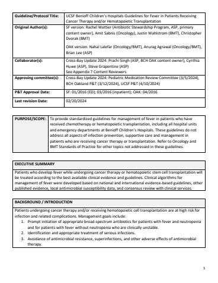

Guideline
Benioff Children's Hospitals Guidelines for Fever in Patients Receiving Cancer Therapy and/or Hematopoietic Transplantation

Hosted on idmp.ucsf.edu, no login. 10 pages · 1562 KB
PURPOSE/SCOPE: To provide standardized guidelines for management of fever in patients who have received chemotherapy or hematopoietic transplantation, including all hospital units and emergency departments at Benioff Children’s Hospitals. These guidelines do not address all aspects of infection prevention, supportive care and management in patients who are receiving cancer therapy or transplantation. Refer to Oncology and BMT Standards of Practice for other topics not addressed in these guidelines.
SUMMARY: Patients who develop fever while undergoing cancer therapy or hematopoietic stem cell transplantation will be treated according to the best available clinical evidence and guidelines. Clinical algorithms for management of fever were developed based on national and international evidence-based guidelines, other published evidence, local antimicrobial susceptibility data, and consensus review with clinical services.
CLINICAL ALGORITHMS:
Emergency Department Algorithm
Initial Inpatient Management Algorithm
Inpatient Non-Neutropenic Fever Algorithm
Inpatient Re-assessment Algorithm
Prolonged Fever with Ongoing Neutropenia Algorithm
Refer to Pediatric Antimicrobial Dosing Guidelines and Epic order panels for antimicrobial doses.
ALTERNATIVES FOR PATIENTS WITH BETA-LACTAM (PENICILLIN OR CEPHALOSPORIN) ALLERGY
For patients with documented beta-lactam (penicillin or cephalosporin) allergy:
- Assessment via the Inpatient Beta-Lactam Allergy Guideline is strongly encouraged early during treatment or before antibiotic therapy is needed. Most (>90%) patients with history of allergy do not have true allergy and can safely tolerate beta-lactam antibiotic therapy. Having an allergy label and receiving non-first line antibiotics increases risk for adverse events, Clostridioides difficile infection and longer hospitalization.
- The beta-lactam allergy guideline provides recommendations to assess prior reaction history, determine what antibiotic(s) can be given at full dose and/or test dose, and pathways for test dose procedure.
- A beta-lactam based regimen is considered optimal if it can be given. Alternative regimens are provided below based on allergy risk assessment. An aztreonam-based regimen can be given at full dose but is not preferred therapy based on spectrum of activity and/or toxicity profile.
Alternative Antibiotics for Patients with Beta-Lactam Allergy
BACKGROUND: Patients undergoing cancer therapy and/or receiving hematopoietic cell transplantation are at high risk for infection and related complications. Management goals include:
- Prompt initiation of appropriate broad-spectrum antibiotics for patients with fever and neutropenia and for patients with fever without neutropenia who are clinically unstable.
- Identification and appropriate treatment of serious infections.
- Avoidance of antimicrobial resistance, superinfections, and other adverse effects of antimicrobial therapy.
SUPPORTING EVIDENCE: Sources considered in development of the guidelines include published guidelines (see PDF document) and bloodstream infection antibiogram data for each BCH hospital Pediatric Oncology and BMT services.
See Summary and Rationale for Changes (linked via Box, password required) for description of changes in this version, rationale and supporting literature.
DEVELOPMENT AND REVIEW: See PDF document.
Some links above open on Box or SharePoint and need a UCSF login; they are marked with a lock.